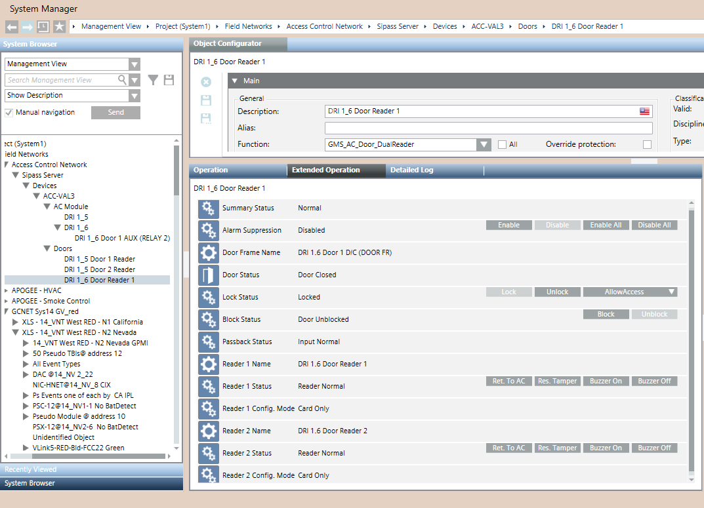

SiPass Doors
The section presents a description of the SiPass door statuses and control commands available from Desigo CC.

SiPass Door Properties
The following table shows and explains the possible values of the Door Status property.
Property | Description |
|---|---|
No abnormal conditions | In normal conditions, a controlled door unlocks for a short period of time when a user presents a card with proper rights to the reader. If the card is not valid or not authorized, the door stays locked and an Access denied to Invalid or Void card event is reported. |
Door Unlocked | As a result of an unlock command, the door lock opens, and the door is unsecured. |
Door Blocked | As a result of a block command, the door is blocked, and user access is not allowed even with a valid card. |
Door Forced | The door frame is physically open for a door in closed state, without a valid access. |
Door Held | The door remained open beyond a configurable period of time after a valid access (through a valid card read or by pressing REX switch). |
SiPass Door Commands
The following table shows and explains the available door control commands. See below the command buttons in the Extended Operation tab in System Manager.
Door Command | Description |
|---|---|
Unlock | Permanently opens the door lock and allows for uncontrolled access. This command overrides the programmed lock/unlock schedule that may be defined in the SiPass configuration. |
Lock | Permanently closes the door lock and restores a controlled access. This command overrides the programmed lock/unlock schedule that may be defined in the SiPass configuration. |
Allow Access | Opens the door lock for a predefined time to allow an access. This command initiates the same process as if the user had used a valid card. |
Allow Access > Cancel PA | Cancels the Permanent Action (PA) of manual Lock or Unlock. This command does not change the current lock status, but removes the permanent effect of the latest Lock/Unlock command. This allows a subsequent programmed action to complete successfully. |
Block | Permanently blocks the door to deny any access. |
Unblock | Undoes the Block command and restores a controlled access. |
Ret.To AC | Returns to Access Control (AC) the lock control with immediate effect. This command cancels the latest Lock/Unlock command and results in the lock status being updated as necessary to reflect the current programmed schedule. |
Res.Tamper | If the SiPass reader is tampered, then an event occurs. When the tamper condition is resolved, the reset tamper command may be required to clear the event depending on the SiPass configuration (refer to the Reader Auto-Reset option). |
Buzzer On | Enables the buzzer on the reader. |
Buzzer Off | Disables the buzzer on the reader. |